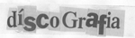
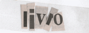
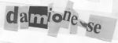

Influências
Bandas influenciadas por Damião Experiença
Este espaço é para bandas que sâo ou foram influenciadas pela obra damiônica. Se sua banda tem influências de Damião nos escreva para publicarmos no site.
| Supersimetria | |
|
Improvisação Anti-jazz Quadridimensional. A banda Supersimetria vale-se da experyença para destruição das barreiras intrínsecas que separam a música do ruído. Fisica quântica e música fractal, forró e grindcore num turbilhão eletrônico modulado por elementos mais diversos, dos catódicos às sucatas, criando uma experyença única. http://www.supersimetria.net |
|
| Rattü Mortö | |
|
RÅTTÜ MORTÖ é uma catástrofe sonora:
Com músicas de curta duração e aparentemente tocadas com o mesmo instrumental,
RÅTTÜ MORTÖ é um barulho inaudível, com urros, gritos primatas e escarros
psicopatas que refletem uma percepção damiônica de música. Para sons e contatos: http://esgoto.freeshell.org |
|
| Zé Urbano | |
|
Poeta e músico experimental, Zé Urbano desenvolve poemas dadaísticos-surreais com
influências e citações aos mestres Damião e Hermetto. Zé Urbano ainda cria músicas
eletrônicas que nos dão a sensação de texturas sonoras, diferente do que
existe por ai neste campo. Acesse os links para ver do que falamos.
http://www.zeurbano.blogspot.com http://www.gustavojobim.hpg.ig.com.br |
|
| Zumbi do Mato | |
|
No seu terceiro disco atualmente, a banda carioca Zumbi do Mato mistura
inúmeros estilos sendo surreal, divertida e estranha. Vocais, bateria, baixo,
teclados e até onde sabemos não ouvimos guitarras ! Formada em 1989,
possui influências de Daminhão. Ouça as músicas, especial atenção a
Garota de Ipanema, e veja se não é o mestre cantando.
http://www.z1bidomato.blogspot.com http://www.zumbidomato.kit.net |
|
| Rogério Skylab | |
|
Desde seu primeiro disco em 1992, (disco este cotado pela crítica no mesmo
nível de um álbum do Sonic Youth), Skylab desenvolve um trabalho singular com
sua músicas experimentais, inteligentes e com bom humor. Possui um disco
dedicado a Daminhão Experiencia e o mestre ainda participa de uma faixa.
Damião é citado como seu modelo em diversas entrevistas.
http://www.rogerioskylab.com.br |
|
| Sujeito Maldito | |
|
O que atum coqueiro, mobral e velhice tem em comum? Ouça o sujeito maldito e entenda.
Músicas de um minuto cada, estética única, ótimas letras e uma damionice infinita que esta banda de BH possui.
Pra ter uma idéia - > Ave maria, mamífero maria, peixe maria e verme maria ...para entender a calmaria
Ave maria, ave josé, ave bonifácio e ave mané ...para beber com café, que tal ?
Confira no site da banda, recém-inaugurado:
http://www.muitodoido.com.br |
|
| Cobras do Texas | |
|
Banda com alto índice de caos estruturado quântico linear. A banda Cobra do Texas tem em sua formação e estrutura a
utilização de vários elementos damionicos, chegando muitas vezes a parecer até com o Damião. Confira a música....
e veja o que estamos falando. Vários instrumentos, anti tempos, vozes simultâneas e criatividade ímpar transbordando
o site, rico em informações e materiais sobre a banda, que leva extremamente a sério seu trabalho.
Quando ouvimos aqui no Portão, ficamos babando.
http://www.cobrasdotexas.com.br |
|
| John Merrick Experience | |
|
Tendo por influência Sun Ra + Damião, entre outros, o JME - com alto volume de produção e criação de sons e
ótima criatividade - vem criando com um misto de grooves eletrônicos e ruídos de inspiração punk, uma obra eletrônica.
Estão no catálogo da Trama e lá podem ver o trabalho dos caras. Já foram integrantes da banda Marcelo D2 e Formigão do Planet Hemp http://www.jmx.com.br |
|
| Funilaria do Som, Radio Livre FM, 106, 7 – São Paulo – SP | |
|
Então, se você é de São Paulo mano, tem ainda o privilégio de ouvir Damião Experiença num programa do qual ele é
patrono. A funilaria do som leva as sextas feiras às 21:00 o seu lema - martelinho de ouro da música ruim e a
perda total da música boa – no ar, rolando sempre além de Damião, várias pérolas do cancioneiro popular,
mostrando porque LEmma Emou Emai ema ema ou Sai raialai, lemas Meca lê ca lê ca lê cumdai.
Para contatos e programações, escreva para funilaria@chevettes.com
http://radiolivre.org/funilaria/funilaria.jpg |
|
| Pexbaa | |
|
Pexbaa é única, damiônica, experimental, melodica. Unindo diferentes fontes de inspiração que transcende ao lugar comum,
arte, som, cacofonia se unem criando um único elemento indescritível, uma estrutura sonora que deve ser apreciada em
intensidade e extensão. Abra o browser agora, e veja o que estamos falando !!! Improvisação, experimentalismo, combinação aleatória, caostropia, que remonta desde os anos 80 com antigas bandas de BH. Salve Minas Gerais !!! http://www.pexbaa.com.br |
|
Topo
Acessos ao site desde
25 de agosto de 2002: